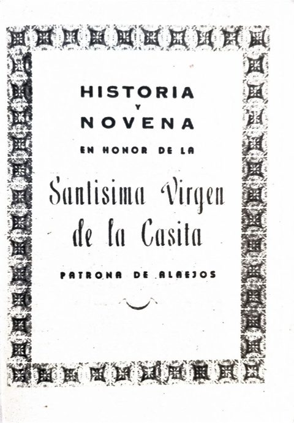
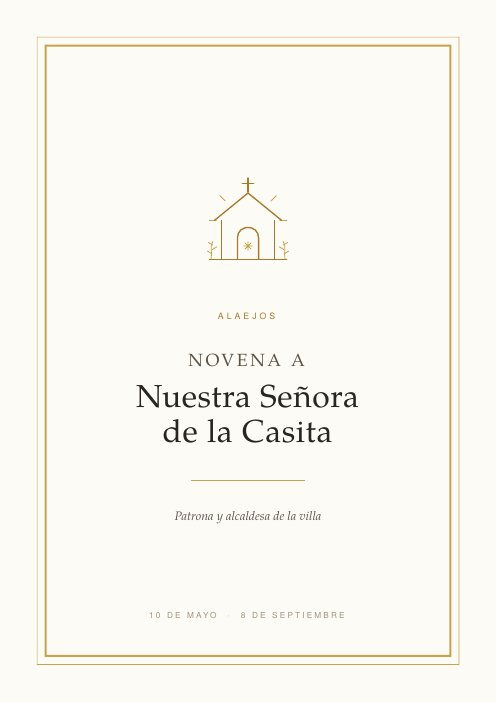

La novena de la Virgen de la Casita
Tres ediciones de la novena a Nuestra Señora de la Casita, patrona de Alaejos, para leer, rezar e imprimir.
La novena se reza dos veces al año: del 2 al 10 de mayo, para la fiesta de la aparición, y del 31 de agosto al 8 de septiembre, para la Natividad de la Virgen y las fiestas patronales. Sobre la imagen, la ermita y la historia de la devoción hay más en la página de la ermita de la Virgen de la Casita.
La historia de las novenas impresas la reconstruyó José-Luis Pérez Muñoz en el programa de fiestas de 2015 («De la novena a la Virgen de la Casita»). La más antigua que se conoce es la del clérigo alaejano Isidro Santana Escudero, de poco después de 1814, de la que solo hay un ejemplar en una colección particular. Aquí se publican las tres que siguen.
1865: la novena de Fernández de Castro

Es la novena que se ha rezado en Alaejos desde hace más de siglo y medio. Su título completo es Novena á la Vírgen Santísima en su sagrada imágen de la Casita, que se venera en su Santuario, extramuros de la villa de Alaejos, y la firma «el licenciado en Derecho D. V. M. F. de C.». Detrás de esas iniciales está Venancio María Fernández de Castro (1826-1914), abogado, bibliotecario de la Universidad de Valladolid y académico. Se imprimió en Valladolid en 1865, en la imprenta de Juan de la Cuesta.
Cada día de la novena está dedicado a una invocación de la letanía de la Virgen. Incluye dos gozos a la Virgen de la Casita: uno al final de la oración del primer día y otro, «compuesto por un hijo de dicha villa», al final del librito.
Es una reproducción fotográfica del folleto original. Según Pérez Muñoz, se conserva un ejemplar en la Biblioteca Histórica de Santa Cruz, de la Universidad de Valladolid.
1952: Historia y novena


En 1911 la novena de 1865 se reimprimió junto con la historia de la aparición, tomada del jesuita Juan de Villafañe (1726), unos «Nuevos gozos» y poesías de varios vecinos. Los beneficios se destinaban a la asociación La Caridad Alejana.
En 1952 se volvió a imprimir, en Zaragoza, con el título Historia y novena en honor de la Santísima Virgen de la Casita, patrona de Alaejos. Mantiene la historia, la novena de Fernández de Castro y los tres gozos, pero no las poesías. Está fechada en Alaejos «en la fiesta de la Natividad de Nuestra Señora» de 1952. Esta edición se reprodujo en 1991 en el libro que publicó la Diputación de Valladolid para el V Centenario.
Repite también las licencias eclesiásticas de 1911: el nihil obstat del jesuita Constancio Eguía y el imprimatur del arzobispo de Valladolid José María Cos. El prólogo explica que lo recaudado con su venta se destinaba a la asociación benéfica La Caridad Alejana.
Es una reproducción fotográfica del folleto original.
2026: la novena en la lengua de hoy


Es la misma novena de 1865, puesta en el castellano de hoy para que se pueda rezar con facilidad. Conserva lo que la hace propia de Alaejos: la retama, la sequía, Catalina de la Cruz, los exvotos del santuario, los pastores y la bendición de los campos y los ganados. Los gozos, el himno y la salve se han dejado tal cual, porque se cantan y mucha gente se los sabe de memoria.
Empieza con la historia de la aparición, según el folleto de 1952, con una nota que separa lo que cuenta la tradición de lo que está documentado. Está pensada para imprimirla en A4.
¿Tiene otra edición?
Si conserva en casa alguna novena antigua de la Virgen de la Casita, en especial la de 1911 o la de Isidro Santana Escudero, nos gustaría digitalizarla para que no se pierda. Puede escribirnos desde Colabora.